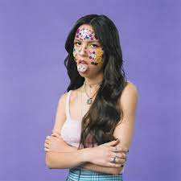

Sour é o álbum de estreia da cantora estadunidense Olivia Rodrigo, lançado em 21 de maio de 2021 através da Geffen Records. O álbum foi desenvolvido durante a quarentena da pandemia de COVID-19, com a produção sendo realizada por Dan Nigro, que co-escreveu o álbum ao lado de Rodrigo. Com 11 músicas no total, o álbum também rendeu nada mais que três Grammys para Olivia Rodrigo. No total, “Sour” vendeu 3,7 milhões de unidades de álbuns equivalentes nos Estados Unidos, seu lançamento de estreia terminou 2021 como o segundo álbum mais popular nos EUA, com 2,86 milhões de unidades conquistadas.